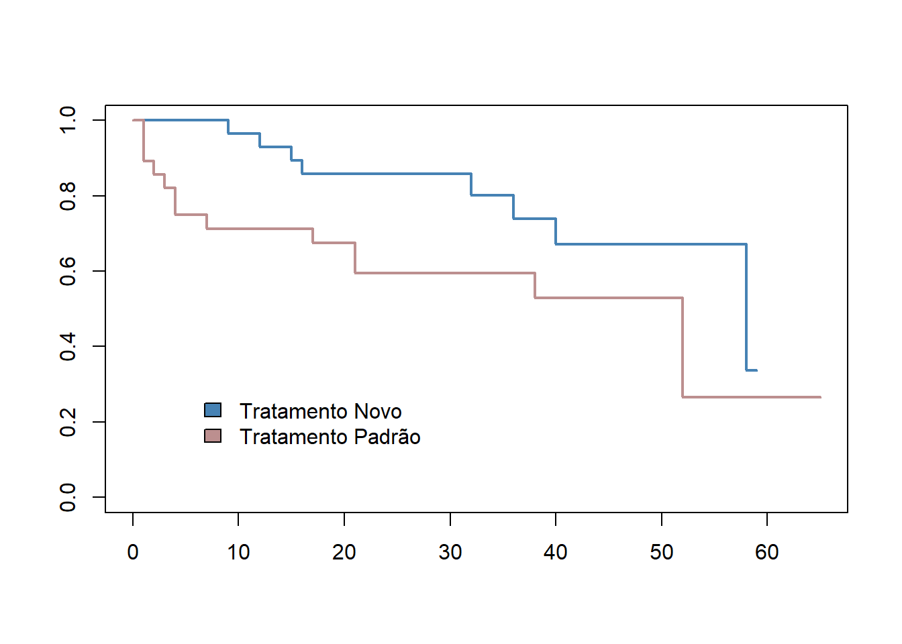
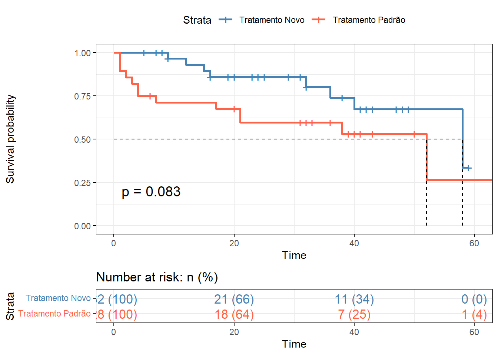

pacman::p_load(dplyr,
flextable,
ggplot2,
knitr,
readxl,
survival,
survminer)23 Análise de Sobrevida
23.1 Pacotes necessários neste capítulo
23.2 Introdução
A análise de sobrevida é utilizada quando se pretende investigar o tempo entre o início de um estudo e a ocorrência subsequente de um evento que modifica o estado de saúde do indivíduo. É bastante usada em estudos sobre câncer, por exemplo, analisando o tempo desde a cirurgia até a morte, o tempo desde o início do tratamento até a progressão da doença, o tempo desde a resposta até a recorrência da doença. Ela também é usada para medir a ocorrência de outros eventos como o tempo desde a infecção pelo vírus da imunodeficiência humana (HIV) até o desenvolvimento da Síndrome de Imunodeficiência Adquirida (SIDA), o tempo de hospitalização, tempo de amamentação, etc.
O interesse está centrado na verificação do efeito dos fatores de risco ou de prognóstico sobre o tempo de sobrevida de um indivíduo ou de um grupo, bem como definir as probabilidades de sobrevida em diversos momentos no seguimento do grupo. Considera-se tempo de sobrevida, ou simplesmente sobrevida, o tempo a entre a entrada do indivíduo no estudo e a ocorrência do evento de interesse. Com relação aos dados relacionados ao tempo, podem ocorrer problemas. O tempo para um evento geralmente não tem distribuição normal. Além disso, nem sempre se pode esperar até que o evento ocorra em todos os pacientes e alguns pacientes abandonam o estudo mais cedo. Todos devem ser considerados e as análises de sobrevida contornam esses problemas.
Em estudos de sobrevida, os indivíduos são observados até a ocorrência de um evento final que, geralmente, corresponde à morte, ou à variação de um parâmetro biológico ou outro evento que indique a modificação do estado inicial (cura, recorrência, retorno ao trabalho, etc.) O evento final é denominado de falha, por referir-se, em geral, a algo indesejável.
23.3 Dados Censurados
Quando, em um estudo de sobrevida, os pacientes que saem do estudo ou que não vivenciam o evento são chamados de observações censuradas.
Esses tempos de sobrevida censurados subestimam o verdadeiro (mas desconhecido) tempo para o evento. Quando o evento (supondo que ocorreria) está além do final do período de acompanhamento, a censura costuma ser chamada de censura à direita.
A censura também pode ocorrer quando se observa a presença de um evento, mas não se sabe onde começou. Por exemplo, considere um estudo que investigue o tempo para a recorrência de um câncer após a remoção cirúrgica do tumor primário. Se os pacientes forem examinados 3 meses após a cirurgia e já tinham recorrência, então o tempo de sobrevida será censurado a esquerda, porque o tempo real (desconhecido) de recorrência ocorreu menos de 3 meses após a cirurgia.
Os dados de tempo do evento também podem ser censurados em intervalos, o que significa que os indivíduos entram e saem da observação. Se considerarmos o exemplo anterior e os pacientes também forem examinados aos 6 meses, aqueles que estão livres da doença aos 3 meses e perdem o acompanhamento entre 3 e 6 meses são considerados censurados no intervalo. A maioria dos dados de sobrevivência incluem observações censuradas à direita (Clark et al. 2003).
23.4 Método de Kaplan-Meier
O método de Kaplan-Meier (KM) é um método não paramétrico usado para estimar a probabilidade de sobrevivência a partir dos tempos de sobrevivência observados (Kaplan e Meier 1958).
A função de sobrevida é a probabilidade de sobreviver a pelo menos um determinado ponto no tempo e o gráfico desta probabilidade é a curva de sobrevida. O método de sobrevida de Kaplan-Meier pode ser usado para comparar as curvas de sobrevida de dois ou mais grupos, como comparar um grupo tratado a um grupo não tratado (placebo), ou homens comparados a mulheres.
A curva de sobrevida KM, um gráfico da probabilidade de sobrevida de Kaplan-Meier em relação ao tempo, fornece um resumo útil dos dados que podem ser usados para estimar medidas como a mediana de sobrevida.
23.4.1 Pressupostos do método de Kaplan-Meier
Os pressupostos para o uso da análise de sobrevida são as seguintes (Peat e Barton 2014):
- os participantes devem ser independentes, ou seja, cada participante aparece apenas uma vez no grupo;
- os grupos devem ser independentes, ou seja, cada participante está apenas em um grupo;
- todos os participantes são livres de eventos quando se inscrevem no estudo;
- a medição do tempo até o evento deve ser precisa;
- o ponto inicial e o evento são claramente definidos;
- as perspectivas de sobrevida dos participantes permanecem constantes, ou seja, os participantes inscritos no início ou no final do estudo devem ter as mesmas perspectivas de sobrevida;
- a probabilidade de censura não está relacionada à probabilidade do evento.
Como em todas as análises, se o número total de pacientes em qualquer grupo for pequeno, digamos menos de 30 participantes em cada grupo, os erros padrão em torno das estatísticas resumidas serão grandes e, portanto, as estimativas de sobrevida serão imprecisas. Para estudos de sobrevida, recomenda-se fazer o cálculo do tamanho amostral previamente. O R dispõe de um pacote que possibilita este cálculo, o powerSurvEpi (Qiu et al. 2015).
23.4.2 Dados do exemplo
Cenário
Um ensaio clínico randomizado hipotético selecionou 60 pacientes para participar de dois tratamentos. Aleatoriamente, um novo medicamento foi administrado a 32 pacientes e 28 usaram o tratamento padrão durante 65 meses. Desses paciente, 33 eram mulheres e 27 homens. Um total de 21 pacientes morreram (7 mulheres e 14 homens)
Os dados se encontram no arquivo dadosSobrevida.xlsx que pode ser obtido aqui . Salve o mesmo em seu diretório de trabalho.
23.4.2.1 Carregar o conjunto de dados
A partir do diretório de trabalho, os dados serão carregados o e atribuídos a um objeto, denominado de sobrevida.
sobrevida <- readxl::read_excel("dados/dadosSobrevida.xlsx")
str (sobrevida)tibble [60 × 5] (S3: tbl_df/tbl/data.frame)
$ id : num [1:60] 22 21 19 13 50 20 51 6 26 31 ...
$ evento: num [1:60] 0 0 0 0 1 1 1 0 1 0 ...
$ tempo : num [1:60] 5 7 8 9 9 12 15 16 16 16 ...
$ sexo : chr [1:60] "fem" "masc" "fem" "fem" ...
$ grupo : chr [1:60] "novo" "novo" "novo" "novo" ...A Saída exibe um banco de dados com cinco variáveis:
- id \(\longrightarrow\) Identificação do indivíduo
- evento \(\longrightarrow\) Desfecho. 0 = censurado; 1 = morte
- tempo \(\longrightarrow\) Sobrevida em meses
- sexo \(\longrightarrow\) 1 = masculino; 2 = feminino
- grupo \(\longrightarrow\) Grupo de tratamento: 1 = novo; 2 = padrão
23.4.2.2 Construir uma tabela tratamento vs evento
table (sobrevida$grupo,
sobrevida$evento,
dnn = c("Tratamento", "Evento")) Evento
Tratamento 0 1
novo 24 8
padrão 15 13A saída mostra o número em cada grupo, o número de eventos e o número censurados. Houve menos eventos, mas mais pacientes censurados no grupo do tratamento novo.
23.4.3 Tabela de Sobrevida
Deve-se calcular as estimativas de sobrevida de Kaplan-Meier que servirão para a construção da Curva de Sobrevida de cada tratamento. Para isso, pode-se usar a função survfit() do pacote survival(T. Therneau et al. 2015). Seus principais argumentos incluem:
- objeto de sobrevida, criado usando a função
Surv(), aninhada na funçãosurvfit() - e o conjunto de dados contendo as variáveis.
Para a construção da tabela e da curva de sobrevida, digite e execute o seguinte:
tabsurv <- survfit (Surv (tempo, evento) ~ grupo, data = sobrevida)
summary(tabsurv) Call: survfit(formula = Surv(tempo, evento) ~ grupo, data = sobrevida)
grupo=novo
time n.risk n.event survival std.err lower 95% CI upper 95% CI
9 29 1 0.966 0.0339 0.9013 1.000
12 27 1 0.930 0.0479 0.8404 1.000
15 26 1 0.894 0.0579 0.7874 1.000
16 25 1 0.858 0.0657 0.7387 0.997
32 15 1 0.801 0.0826 0.6545 0.980
36 13 1 0.739 0.0965 0.5725 0.955
40 11 1 0.672 0.1086 0.4897 0.923
58 2 1 0.336 0.2438 0.0811 1.000
grupo=padrão
time n.risk n.event survival std.err lower 95% CI upper 95% CI
1 28 3 0.893 0.0585 0.7853 1.000
2 25 1 0.857 0.0661 0.7369 0.997
3 24 1 0.821 0.0724 0.6911 0.976
4 23 2 0.750 0.0818 0.6056 0.929
7 20 1 0.712 0.0859 0.5625 0.902
17 19 1 0.675 0.0892 0.5210 0.875
21 17 2 0.596 0.0947 0.4361 0.813
38 9 1 0.529 0.1048 0.3592 0.780
52 2 1 0.265 0.1944 0.0628 1.000A Tabela de sobrevida é uma tabela descritiva com a coluna time, indicando o dia em que o evento ocorreu. A coluna n.risk indica o número de pacientes sob risco naquele momento. A coluna denominada n.event indica o número total de pacientes que sofreram o evento desde o início do estudo até o momento avaliado. A coluna survival indica a proporção de pacientes que sobreviveram desde o início do estudo até aquele momento. Por exemplo, a sobrevida cumulativa é de 0,801 aos 32 meses no grupo tratamento novo e de 0,529 aos 38 meses no grupo tratamento padrão.
O método Kaplan-Meier produz uma única estatística resumida do tempo de sobrevida, isto é, a média ou mediana. O tempo médio de sobrevida é estimado a partir dos tempos observados e é mostrado para cada grupo na tabela de médias e medianas para o tempo de sobrevida.
A sobrevida média é calculada como a soma do tempo dividido pelo número de pacientes que permanecem sem censura. Essa estatística pode ser usada para indicar o período de tempo em que um paciente pode sobreviver. O tempo mediano de sobrevida é o ponto em que metade dos pacientes experimentou o evento. Se a curva de sobrevida não cair para 0,5 (ou seja, probabilidade de sobrevida de 50%), o tempo mediano de sobrevida não poderá ser calculado.
Estes dados podem ser visualizados na saída, obtida com o comando:
summary(tabsurv)$table records n.max n.start events rmean se(rmean) median 0.95LCL
grupo=novo 32 32 32 8 49.92533 4.078218 58 40
grupo=padrão 28 28 28 13 36.62437 5.403382 52 21
0.95UCL
grupo=novo NA
grupo=padrão NA23.4.3.1 Visualização da curva de sobrevida
Pode-se visualizar a curva (Figura 23.1) de uma maneira simples, utilizando a função plot() do pacote básico do R:
plot (tabsurv, col = c ("steelblue", "rosybrown"), lwd = 2)
legend (legend = c ("Tratamento Novo", "Tratamento Padrão"),
fill = c ("steelblue", "rosybrown"),
bty="n",
cex = 1,
y = 0.3,
x = 5)

Outra maneira, mais sofisticada, de produzir a curva de KM é usando a função ggsurvplot(), incluída no pacote survminer (Kassambara et al. 2021) que utiliza o pacote ggplot2 (Figura 23.2)
Com essa função é possível mostrar:
- os intervalos de confiança de 95% da função de sobrevida, usando o argumento
conf.int = TRUE; - o número e/ou a porcentagem de indivíduos em risco por tempo, utilizando a opção
risk.table. Os valores permitidos para arisk.tableincluem: TRUEouFALSEespecificando se deve mostrar ou não a tabela de risco. O padrão é FALSE.absoluteoupercentage: para mostrar o número absoluto e o percentual de sujeitos em risco por tempo, respectivamente. Useabs_pctpara mostrar o número absoluto e a porcentagem.- o nrisk_cumcensor e nrisk_cumevents . Mostra o número em risco e o número acumulado de censura e eventos, respectivamente.
- o valor p do teste
Log-Rankcomparando os grupos usandopval = TRUE. - linha horizontal/vertical na sobrevida mediana usando o argumento
surv.median.line. Os valores permitidos incluem um dec(“nenhum”, “hv”, “h”, “v”). Onde v = vertical, h = horizontal.
ggsurvplot (tabsurv,
pval = TRUE,
conf.int = FALSE,
risk.table = "abs_pct",
risk.table.col = "strata",
surv.median.line = "hv",
ggtheme = theme_bw (),
legend.labs = c ("Tratamento Novo",
"Tratamento Padrão"),
palette = c ("steelblue", "tomato"))

O teste Log Rank pondera todos os pontos de tempo igualmente e é a estatística de sobrevida mais usada (Bland e Altman 2004). O teste de log rank é um teste não paramétrico, que não faz suposições sobre as distribuições de sobrevivência. Os pressupostos deste teste são os mesmos do método de Kaplan-Meier. No exemplo, o valor p do teste é fornecido na Figura 23.2 e é igual a 0,083, ou seja, acima de 0,05, indicando não rejeição da \(H_{0}\). A hipótese nula diz que não há diferença na sobrevivência entre os dois grupos.
Essencialmente, o teste de log rank compara o número observado de eventos em cada grupo com o que seria esperado se a hipótese nula fosse verdadeira (ou seja, se as curvas de sobrevivência fossem idênticas). A estatística de log rank é aproximadamente distribuída como uma estatística de teste qui-quadrado.
A função survdiff(), também do pacote survival (T. M. Therneau 2024), pode ser usada para calcular o teste de log-rank comparando duas ou mais curvas de sobrevida e pode ser usado da seguinte forma:
dif_sobrevida <- survdiff (Surv (tempo, evento) ~ grupo, data = sobrevida)
dif_sobrevidaCall:
survdiff(formula = Surv(tempo, evento) ~ grupo, data = sobrevida)
N Observed Expected (O-E)^2/E (O-E)^2/V
grupo=novo 32 8 11.91 1.28 3.01
grupo=padrão 28 13 9.09 1.68 3.01
Chisq= 3 on 1 degrees of freedom, p= 0.08 A suposição de que o risco de um evento em um grupo em comparação com o outro grupo não muda ao longo do tempo é chamado de risco proporcional. Se as curvas de sobrevida se cruzam, isso sugere que os riscos não são proporcionais. Nessa situação, o teste log rank será menos poderoso e um teste alternativo deve ser considerado, como a Regressão de Cox ou Modelo de Riscos Proporcionais.
23.5 Regressão de Cox ou Modelo de Riscos Proporcionais
O modelo tem como objetivo a examinar simultaneamente como os fatores especificados influenciam a taxa de ocorrência de um determinado evento (por exemplo, infecção, morte) em um determinado ponto no tempo. Essa taxa é referida como hazard ratio.
Geralmente, as variáveis preditoras (ou fatores) são denominadas covariáveis. O modelo de Cox é expresso pela função de risco denotada por h(t). Pode ser interpretada como o risco de morrer no tempo t e estimada da seguinte forma:
\[ h\left(t\right) = h_{0} \left(t\right) \times e^{\left( {b_{1}x_{1}+b_{2}x_{2}+...+b_{n}x_{n}} \right)} \]
Onde,
- t é o tempo de sobrevida, indica que o risco varia com o tempo;
- h(t) é a função de risco (hazard) determinada por um conjunto de n covariáveis (\(x_{1}, x_{2}, ..., x_{n}\));
- Os coeficientes (\(b_{1}, b_{2}, ..., b_{n}\)) medem o tamanho do efeito das covariáveis;
- h(0) é o risco basal, o valor do risco se todos os \(x_{i}\) fossem iguais a zero (\(exp(0) = 1\)).
As quantidades exp(\(b_{i}\)) são chamadas de hazard ratio (HR). Uma hazard ratio acima de 1 indica uma covariável que está positivamente associada à probabilidade do evento e, portanto, negativamente associada ao tempo de sobrevida.
Resumindo,
- HR = 1: Sem efeito
- HR <1: Redução do risco
- HR> 1: Aumento do risco
Para calcular o modelo de Cox no R serão utilizados os mesmos dados do arquivo dadosSobrevida.xlsx.
O pacote survival tem uma função para calcular o modelo de Cox, coxph(), que usa os argumentos:
- formula \(\longrightarrow\) é o modelo linear com um objeto de sobrevivida como variável desfecho. O objeto de sobrevida é criado usando a função
Surv()como segue:Surv(tempo, evento). - data \(\longrightarrow\) um banco de dados contendo as variáveis.
mod.cox <- coxph (Surv (tempo, evento) ~ grupo, data = sobrevida)
mod.coxCall:
coxph(formula = Surv(tempo, evento) ~ grupo, data = sobrevida)
coef exp(coef) se(coef) z p
grupopadrão 0.7698 2.1593 0.4505 1.709 0.0875
Likelihood ratio test=3.03 on 1 df, p=0.08171
n= 60, number of events= 21 A função summary() fornece um relatório mais completo:
summary(mod.cox)Call:
coxph(formula = Surv(tempo, evento) ~ grupo, data = sobrevida)
n= 60, number of events= 21
coef exp(coef) se(coef) z Pr(>|z|)
grupopadrão 0.7698 2.1593 0.4505 1.709 0.0875 .
---
Signif. codes: 0 '***' 0.001 '**' 0.01 '*' 0.05 '.' 0.1 ' ' 1
exp(coef) exp(-coef) lower .95 upper .95
grupopadrão 2.159 0.4631 0.893 5.221
Concordance= 0.637 (se = 0.054 )
Likelihood ratio test= 3.03 on 1 df, p=0.08
Wald test = 2.92 on 1 df, p=0.09
Score (logrank) test = 3.06 on 1 df, p=0.08Os resultados da regressão de Cox, podem ser interpretados da seguinte forma:
Significância estatística. A coluna marcada com z fornece o valor da estatística Wald. Corresponde à razão de cada coeficiente de regressão para seu erro padrão (\(z = \frac{coef}{EP_{coef}}\)). A estatística Wald avalia se o coeficiente beta (\(\beta\)) de uma determinada variável é estatisticamente diferente de 0. A partir da saída, pode-se concluir que não há diferença estatisticamente significativa entre os grupos (p = 0,0875).
Coeficientes de regressão. A seguir deve-se observar, no modelo de Cox, o sinal dos coeficientes de regressão (coef). Um sinal positivo significa que o hazard (risco) é maior e, portanto, pior o prognóstico, para sujeitos com valores mais elevados dessa variável. No exemplo, a variável grupo é codificada como 1=novo, 2=padrão. O resumo do modelo de Cox fornece a hazard ratio (HR) para o segundo grupo em relação ao primeiro grupo, ou seja, tratamento padrão versus tratamento novo. O coeficiente beta para grupo = 0,7698 indica que os indivíduos do tratamento padrão têm maior risco de morte (taxas de sobrevivência mais baixas) do que os do grupo tratamento novo, nesses dados. Entretanto, esta diferença não é estatisticamente significativa.
Hazard ratios. Os coeficientes exponenciados (exp(coef) = exp(0,7698) = 2,1593), também conhecidos como hazard ratio, fornecem o tamanho do efeito das covariáveis. Por exemplo, ser do grupo padrão aumenta o risco por um fator de 2,1593. Se esta diferença fosse significativa (P < 0,05), pertencer ao grupo padrão estaria associado a um mau prognóstico.
Intervalos de confiança das taxas de risco. O resultado do resumo também fornece intervalos de confiança de 95% para a razão de risco (exp(coef)), limite inferior de 95% = 0,893, limite superior de 95% = 5,221, mostrando a não significância estatística, pois cruza o 1.
Significância estatística global do modelo. Finalmente, a saída fornece valores de p para três testes alternativos para significância geral do modelo: O teste de razão de verossimilhança (Likelihood ratio test), teste de Wald e a estatística logrank. Esses três métodos são equivalentes. Para um tamanho amostral grande, eles darão resultados semelhantes. Para n pequeno, eles podem diferir um pouco. O teste de razão de verossimilhança tem melhor comportamento para tamanhos de amostra pequenos, por isso é geralmente preferido.